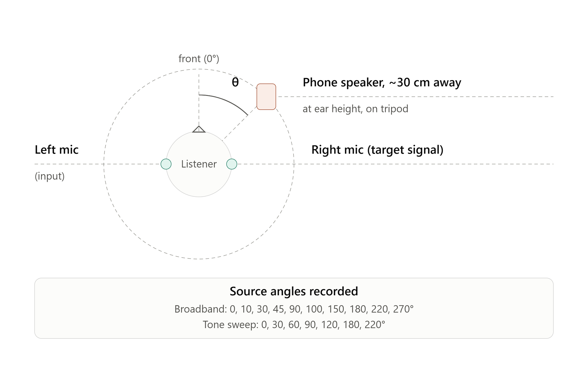
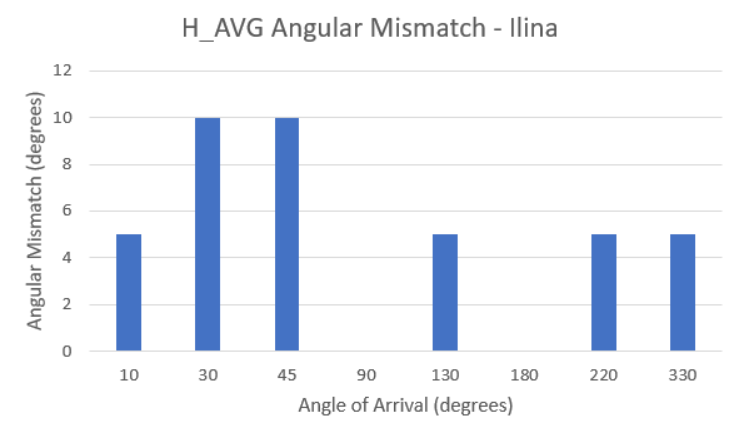
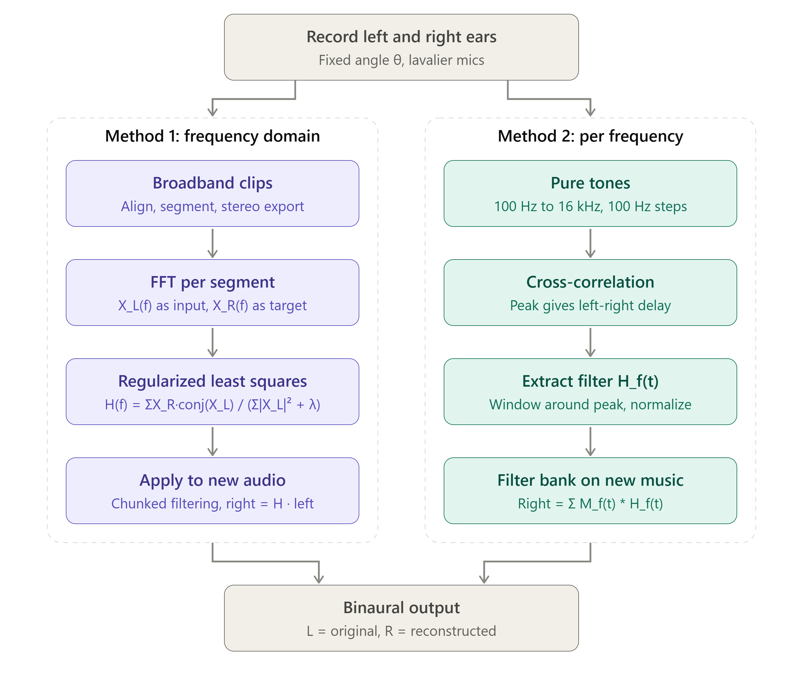
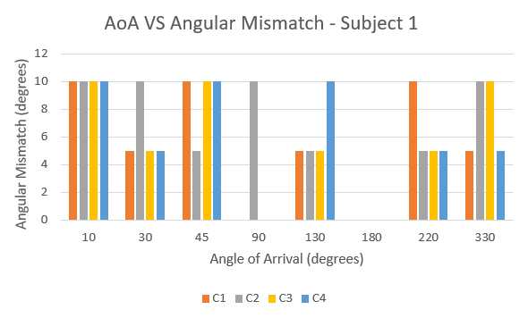
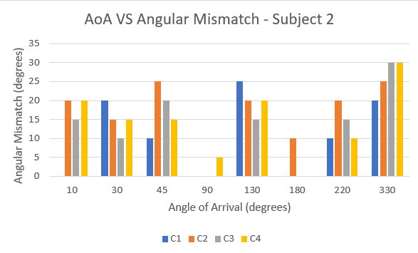

Image placeholderExperimental setup
Upload as assets/experimental-setup.jpg

Experimental setup
Low-cost binaural recordings using microphones placed near the ears and a speaker at a measured angle.
Graph previewAoA vs. angular mismatch
Upload as assets/graph-01-aoa-angular-mismatch.png

Perceptual evaluation
Angular mismatch measured across source positions and audio clips.
0°
Spatialized audio sample
Headphones recommended.
Listen to a reconstruction
A binaural sample generated using the estimated directional transformation.
Abstract
This project investigates whether a low-cost recording setup can be
used to estimate directional acoustic transformations from binaural
recordings and apply them to previously unseen audio.
Omnidirectional lavalier microphones positioned near the ears record
signals produced by a phone speaker placed at known angles around the
listener. The recordings are aligned and processed using a
frequency-domain, regularized least-squares method to estimate a
directional transfer function. A second method estimates
time-domain filters from recordings of individual frequency tones.
The estimated transformations are applied to new audio to generate
binaural outputs, which are examined through listening tests across
recorded angles and audio samples. Initial results indicate that the
learned transformations can produce a perceptible spatial effect;
however, directional reversals and angular offsets show that the
reconstructed direction is not yet consistently aligned with the
physical source position. This work explores an accessible,
measurement-based approach to personalized spatial audio, while
identifying calibration and perceptual validation as areas for
further development.
1. Problem Statement
When the same sound reaches the two ears, the listener does not
receive identical signals. The head and ears modify the sound
differently depending on where the source is located, and the
resulting differences provide cues about its direction.
The goal of this project is to measure that left-right relationship
directly and estimate a directional transformation for a fixed
source angle \(\theta\). If \(x_L\) and \(x_R\) denote the two
recorded signals, the basic model is:
\[
x_R(t) \approx H_\theta(t) * x_L(t)
\]
The project then asks whether an estimated \(H_\theta\) can be
applied to previously unseen audio so that a listener perceives
the sound as arriving from approximately the same direction.
Because the project is based on physical recordings rather than a
pre-existing HRTF database, the measurements are specific to the
recording setup and listener.
The practical problem is therefore not only estimating the
transformation, but also determining whether the resulting
spatial cue is perceptually consistent with the physical source
angle.
2. Applications
The same left-right acoustic differences studied here are relevant
to systems that need to make headphone audio sound as though it
originates from a location in physical space.
Headphone spatialization:
directional filters can transform ordinary audio into binaural
audio associated with a chosen source direction.
Virtual reality:
spatial audio can associate sounds with locations inside a
simulated environment.
Gaming:
directional cues can help communicate where an event is
occurring around the listener.
Low-cost HRTF measurement:
inexpensive microphones provide a way to explore personalized
directional responses without relying on a large measurement
facility.
3. Technical Challenges
Much of the project developed through problems encountered during
the experiments rather than from a fixed procedure decided in
advance.
CHALLENGE 01
The First Recording Setup Did Not Work
The initial plan used Bluetooth earbuds as the recording
devices. In practice, their onboard noise cancellation altered
the signal before it could be recorded. I therefore abandoned
that setup and switched to inexpensive omnidirectional
lavalier microphones positioned near the ears.
CHALLENGE 02
Aligning the Two Ear Recordings
The left and right recordings had to be aligned before their
differences could be interpreted as acoustic effects. The
signals were segmented, aligned during post-processing, and
exported as stereo waveforms before estimating the transfer
function.
CHALLENGE 03
Estimating a Stable Transfer Function
The relationship between the two recorded signals is not
perfectly solvable because of noise and measurement variation.
The first approach therefore used a regularized least-squares
estimate in the frequency domain rather than a direct division
at every frequency.
CHALLENGE 04
Measuring Perceived Direction
A physically measured angle does not give a single exact
perceptual answer. The first reconstructions produced a
noticeable spatial effect, but the direction was initially
flipped and later showed an approximately \(10^\circ \pm 5^\circ\)
mismatch for most non-extreme cases. Front and back positions
were also harder to distinguish perceptually, motivating
repeated tests and comparisons across listeners.
4. Technical Approach
The project began with a simple fixed-angle recording setup. Two
omnidirectional lavalier microphones were taped near the ears to
approximate ear-level input. A phone speaker was placed on a
tripod at a marked angle, roughly 30 cm from the listener and at
ear height. The position of the listener, speaker, and microphones
was kept fixed during each recording session.
The first successful recordings used broadband audio clips. The
microphones took about a week to arrive after the failed earbud
attempt, so the data collection was delayed slightly. The left
and right signals were then recorded simultaneously, aligned
during post-processing, and exported as stereo waveforms using
Audacity.

Experimental setup and processing pipeline.
4.1 From the First Recording to a Working Pipeline
The first experiment was carried out at a source angle of
\(10^\circ\) to the right. After recording the two channels, I
aligned them and used short audio segments for frequency-domain
processing. The left signal was treated as the input and the
right signal as the target, giving the relationship
\[
x_R(t) \approx H_\theta(t) * x_L(t)
\]
The estimated transformation was then applied to new audio in
chunks. The original signal was kept as the left channel, while
the transformed signal was reconstructed as the right channel.
This produced the first working spatialized-audio pipeline.
The first playback did not perfectly match the physical setup:
the perceived direction appeared flipped. The issue was traced to
the reconstruction/channel labeling stage as a likely source of
error and became part of the debugging process rather than a
reason to discard the approach.
4.2 Method 1: Frequency-Domain Regularized Least Squares
After the initial test, the recordings were divided into short
segments and transformed into the frequency domain. For segment
\(i\), the two recordings become
Rather than simply dividing \(X_R(f)\) by \(X_L(f)\), the transfer
function was estimated using a regularized least-squares
formulation. Across the available recordings or segments, the
estimate is
The regularization term \(\lambda\) prevents the estimate from
becoming unstable when the left-channel input has very little
energy at a particular frequency.
I first tested the transformation using individual recordings.
I then began testing whether estimating an average transfer
function across multiple recordings would behave differently on
previously unseen audio. To reduce the chance of unconsciously
choosing a clip that sounded as expected, later perception tests
used randomly selected clips.
4.3 Expanding the Angle Measurements
After the initial \(10^\circ\) experiment, I collected additional
measurements at \(0^\circ\), \(10^\circ\), \(30^\circ\), \(45^\circ\),
\(90^\circ\), \(100^\circ\), \(150^\circ\), \(180^\circ\),
\(220^\circ\), and \(270^\circ\). This made it possible to ask
whether the learned directional relationship continued to produce
a roughly corresponding percept when the source was moved around
the listener.
The front and back of the head were not always clearly
distinguishable by listening alone. For most non-extreme
measurements, the perceived direction was approximately
\(10^\circ \pm 5^\circ\) away from the physical source angle.
Perceived direction was estimated by having the listener point
toward the apparent source and measuring the resulting angle on a
marked plane. The first measurements used a measuring tape, scale,
protractor, and \(10^\circ\) markings, with the head kept level
with the measurement plane. A laser is being used for more precise
measurements going forward.
I also began comparing perceptions across listeners rather than
relying only on my own judgment. The primary experimenter is
referred to as Subject 1, while the second listener
is referred to as Subject 2. Because the two subjects
have different individual head and ear geometries, these comparisons
provide a simple test of how consistently the learned spatial cue
is perceived across subjects.
The next step came from asking whether the directional response
should be estimated separately at each frequency. Instead of
estimating one broadband transformation through the complex
frequency-domain least-squares calculation, I recorded individual
sinusoidal beeps from \(100\) Hz to \(16\) kHz in \(100\) Hz
increments.
For each frequency \(f\), the recorded left-ear and right-ear
signals are \(x_{L,f}(t)\) and \(x_{R,f}(t)\). I estimated a
time-domain filter \(H_f(t)\) satisfying
\[
x_{L,f}(t) * H_f(t) \approx x_{R,f}(t)
\]
The filter was estimated using cross-correlation. The correlation
peak provides the relative delay between the two signals, after
which a window around the peak is extracted and normalized.
For testing, a new music signal \(M(t)\) is decomposed into
frequency components \(M_f(t)\). Each component is convolved with
its corresponding learned filter, and the resulting signals are
summed to reconstruct the right-ear signal:
\[
x_R(t)
=
\sum_f M_f(t) * H_f(t)
\]
The original music signal is retained as the left channel:
\[
x_L(t)=M(t)
\]
I am now reproducing the earlier perception experiments using
this per-frequency approach and comparing them with the original
least-squares method.
4.5 Processing Procedure
FIRST SETUP:
Try Bluetooth earbuds
Observe that onboard noise cancellation alters the recording
Switch to omnidirectional lavalier microphones
BROADBAND METHOD:
Place the speaker at a measured source angle
Record left and right ear signals simultaneously
Align the recordings
Segment the audio
Compute FFTs
Estimate H_theta(f) with regularized least squares
Apply the learned transformation to new audio
Reconstruct binaural playback
EXPERIMENTAL FOLLOW-UP:
Collect additional source angles
Test unseen audio clips
Randomize clip selection during perception tests
Compare repeated self-perception
Compare perception across listeners
Measure physical versus perceived angle
PER-FREQUENCY METHOD:
Record individual tones every 100 Hz from 100 Hz to 16 kHz
Estimate H_f(t) for each frequency
Use cross-correlation to locate the response
Extract and normalize the filter
Decompose new music into frequency components
Convolve each component with its corresponding H_f(t)
Sum the reconstructed components
Use the original signal as the left channel
OUTPUT:
Stereo spatialized audio
5. Experiment Design, Results, and Demos
5.1 Experiment Design
The physical setup was kept fixed during each recording session.
Two omnidirectional lavalier microphones were taped near the ears.
A phone speaker was placed on a tripod at the selected source
angle, approximately one foot from the listener and at ear height.
The listener's seating position and head position were kept fixed
while recordings were collected.
The first broadband experiment used a source at \(10^\circ\).
After the initial pipeline worked, additional broadband data were
collected at \(0^\circ\), \(10^\circ\), \(30^\circ\), \(45^\circ\),
\(90^\circ\), \(100^\circ\), \(150^\circ\), \(180^\circ\),
\(220^\circ\), and \(270^\circ\).
For the least-squares experiments, several audio clips were
recorded at the same source conditions. The resulting transfer
functions were tested on randomly selected clips so that the
evaluation did not depend on choosing an audio clip that already
sounded like the expected direction. I compared individual-clip
estimates with an averaged estimate across multiple clips, and
also began testing whether another listener perceived the same
general direction.
For the per-frequency experiments, individual sinusoidal tones
were recorded from \(100\) Hz through \(16\) kHz in \(100\) Hz
increments. These measurements were collected for
\(0^\circ\), \(30^\circ\), \(60^\circ\), \(90^\circ\), \(120^\circ\),
\(180^\circ\), and \(220^\circ\), after which the resulting
\(H_f(t)\) filters were used to reconstruct the right channel of
a new music signal.
5.2 Results and Observations
Experiment 1: AoA vs. Angular Mismatch

Experiment 2

Experiment 3
The first successful reconstruction produced a spatial effect when
played over headphones, showing that the recorded left-right
relationship contained usable directional information. The first
playback appeared flipped relative to the physical setup, which
led to debugging of the reconstruction and channel labeling.
After expanding the measurements, the perceived direction was
generally close to the recorded direction for the less ambiguous
positions. My current measurement gives an angular mismatch of
approximately \(10^\circ \pm 5^\circ\), excluding the more difficult
extreme regions around the front and back. In particular, sounds
from the front and back were not always clearly distinguishable
by listening alone.
These observations motivated a more systematic perception test.
Rather than relying only on my own judgment, the same spatialized
clips can be evaluated by multiple listeners, with perceived
direction recorded by pointing and compared against the physical
source angle.
5.3 Comparing the Two Methods
The current comparison is between the original frequency-domain
regularized least-squares method and the newer per-frequency
time-domain convolution method. The perception graph set includes
Subject 1–Subject 1 without averaging, Subject 1–Subject 1 with an
averaged transfer function, and Subject 1–Subject 2 without averaging,
with randomly selected clips used where applicable. The least-squares
pipeline uses broadband recordings and estimates a frequency-domain
transfer function from the recorded data. The newer method instead
measures individual frequencies directly and constructs a separate
time-domain response for each frequency.
The same style of perception graphs is being reproduced for the
per-frequency method so that the two approaches can be compared
using the same experimental procedure.
5.4 Demos
The audio examples below are recordings generated during the
project. Additional TouchDesigner visualizations can be added here
to show the source angle, left-right recordings, learned transfer
functions, and frequency-by-frequency reconstruction without
presenting synthetic experimental results as measured data.
Original audio
Spatialized audio at 0°
Spatialized audio at 90°
Spatialized audio at 135°
Spatialized audio at 220°
6. Related Work and Follow-Up Work
6.1 Related Work
HRTF research has studied physical measurement, acoustic modeling,
standardized databases, personalization, and low-cost measurement
techniques. Gardner and Martin introduced widely used KEMAR
measurements, while datasets such as CIPIC and ARI expanded the
availability of measured HRTFs. SOFA provides a standardized format
for storing and exchanging spatial acoustic data.
Other work has investigated how HRTFs vary between listeners and
how directional responses can be measured or modeled from physical
characteristics. These studies provide context for the central
motivation of this project: a listener's own recordings can contain
the directional information needed to construct a personalized
transfer relationship.
Yang and Roy Choudhury's UNIQ system investigates personalized HRTF
estimation using smartphones, acoustic measurements, in-ear
microphones, and motion sensing. The approach in this project is
considerably simpler: it directly records binaural signals at
controlled source angles and estimates the transfer relationship
from those recordings using signal processing.
6.2 Follow-Up Work
The next experiments focus on making the perception measurements
more systematic. This includes repeated random-clip trials,
comparisons between listeners, additional source angles, and
measurements around the back of the head where front-back
perception becomes more difficult.
The per-frequency experiment also provides a way to study how the
directional response changes across the measured frequency range.
The current work compares this approach with the original
least-squares pipeline using the same general perception-testing
procedure.
Other practical follow-up experiments include increasing the
source distance beyond one foot, checking repeated measurements
under the same conditions, and examining how room reflections
affect the reconstructed spatial cue.
7. Gallery
Experimental Setup
Photo of the speaker, listener, and recording setup
Microphone Placement
Close-up of the microphones positioned near the ears
Angle Measurement
Physical source angle and measurement plane
TouchDesigner Spatial Animation
Interactive visualization of source direction
Frequency-Domain Visualization
Visualization of the estimated transfer function
Per-Frequency Reconstruction
Visualization of frequency-specific filtering and reconstruction
8. References
[1] Gardner, B. and Martin, K.
KEMAR HRTF measurements.
[2] Brown, C. P. and Duda, R. O.
A structural model for binaural sound synthesis.
[3] Cheng, C. I. and Wakefield, G. H.
Introduction to head-related transfer functions.
[4] Algazi, V. R. et al.
The CIPIC HRTF database.
[5] Majdak, P. et al.
The ARI HRTF database.
[6] AES69.
Spatially Oriented Format for Acoustics.
[7] Kulkarni, A. and Colburn, H. S.
Influence of spectral cues on sound localization.
[8] Zotkin, D. N. et al.
HRTF selection using anthropometric similarity.
[9] Jin, C. et al.
HRTF interpolation using principal component analysis.
[10] Meshram, A. et al.
HRTF computation from three-dimensional head geometry.
[11] Lee, S. and Kim, H.
HRTF prediction from ear images.
[12] Yang, Z. and Roy Choudhury, R.
Personalizing Head Related Transfer Functions for Earables.
SIGCOMM 2021.
[13] Jayaram, V. et al.
HRTF estimation from binaural recordings in unconstrained
settings.
[14] Bruschi, V. et al.
Review of measurement-based, simulation-based, and
data-driven HRTF generation.